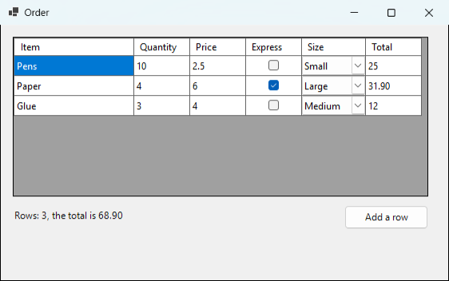

Editing a grid
A DataGridView can be a small spreadsheet: typed columns, cells that the user edits, a read-only total that the program fills, and a grand total that follows each change. This lesson builds an order grid with text, check box and combo box columns and reacts to the cell events.
What you will learn#
- columns with types:
DataGridViewTextBoxColumn,...CheckBoxColumn,...ComboBoxColumn, - adding rows with the values of the cells (
Rows.Add), - reading and writing a cell:
Rows.Item(row).Cells.Item(column).Value, - the CellValueChanged event and
RowIndex, - committing a check box or a combo box change at once,
- a read-only column that the program fills,
- a number that arrives as text, and a text that is not a number.
The tutorial Layout and richer controls showed a grid that is bound to a DataTable. Here the grid is unbound: it holds its own cells, and the program works with them directly.
The program#
# editing a grid - DataGridView with typed columns (text, check box, combo box), a read-only total, cell events and a grand total
load "dotnet.ring"
using {
"System"
"System.Drawing"
"System.Windows.Forms"
}
# controls that the event code uses are global variables
oForm = ""
oGrid = ""
oSum = ""
func main
oForm = uiForm("Order",560,320)
oGrid = new DataGridView()
oGrid.Location = new Point(15,15)
oGrid.Size = new Size(520,200)
oGrid.AllowUserToAddRows = False
oGrid.RowHeadersVisible = False
# The columns have TYPES: a text column, a check box column, a combo box column. The user edits each in the way that fits it.
addTextColumn("Item","Item",150,False)
addTextColumn("Qty","Quantity",70,False)
addTextColumn("Price","Price",70,False)
oCheck = new DataGridViewCheckBoxColumn()
oCheck.Name = "Express"
oCheck.HeaderText = "Express"
oCheck.Width = 70
oGrid.Columns.Add(oCheck)
oCombo = new DataGridViewComboBoxColumn()
oCombo.Name = "Size"
oCombo.HeaderText = "Size"
oCombo.Width = 80
for cSize in [ "Small","Medium","Large" ]
oCombo.Items.Add(cSize)
next
oGrid.Columns.Add(oCombo)
addTextColumn("Total","Total",70,True) # read only: the program fills it
# a row is made with the values of the cells, in the order of the columns
oGrid.Rows.Add(["Pens",10,2.5,False,"Small",""])
oGrid.Rows.Add(["Paper",4,6,True,"Large",""])
oGrid.Rows.Add(["Glue",3,4,False,"Medium",""])
oForm.Controls.Add(oGrid)
oSum = uiLabel(oForm,"",15,230,400,24)
uiButton(oForm,"Add a row",430,226,105,30,"addRow()")
# CellValueChanged runs after a cell was changed: the event arguments have the number of the row (RowIndex) and of the column.
oGrid.setCellValueChangedEvent("rowChanged(aDotNetArgs[2].RowIndex)")
# a combo box and a check box cell keep the editing state until the cell loses the focus: this makes the change count at once
oGrid.setCurrentCellDirtyStateChangedEvent("oGrid.CommitEdit('CurrentCellChange')")
for i = 0 to oGrid.Rows.Count - 1
rowChanged(i)
next
uiRun(oForm)
func addTextColumn cName,cHeader,nWidth,lReadOnly
oColumn = new DataGridViewTextBoxColumn()
oColumn.Name = cName
oColumn.HeaderText = cHeader
oColumn.Width = nWidth
oColumn.ReadOnly = lReadOnly
oGrid.Columns.Add(oColumn)
func addRow
oGrid.Rows.Add(["New item",1,1,False,"Small",""])
# a cell by row and column name (the value of a cell can be text, a number, a boolean or empty)
func cellText nRow,cColumn
return "" + oGrid.Rows.Item(nRow).Cells.Item(cColumn).Value
# the number of a cell: a number that was typed arrives as a text, and a text that is not a number counts as 0. (A conversion that fails
# raises a Ring error, which try / catch turns into the answer 0.)
func cellNumber nRow,cColumn
cText = trim(cellText(nRow,cColumn))
nNumber = 0
try
nNumber = 0 + cText
catch
nNumber = 0
done
return nNumber
# the total of a row: quantity x price, plus 5 for express, and 10 percent more for the size Large. Then the grand total.
func rowChanged nRow
if nRow < 0
return
ok
nTotal = cellNumber(nRow,"Qty") * cellNumber(nRow,"Price")
if oGrid.Rows.Item(nRow).Cells.Item("Express").Value = True
nTotal += 5
ok
if cellText(nRow,"Size") = "Large"
nTotal = nTotal * 1.1
ok
cNew = shortNumber(nTotal)
if cellText(nRow,"Total") != cNew
oGrid.Rows.Item(nRow).Cells.Item("Total").Value = cNew # this raises CellValueChanged again, but the text is the same now
ok
showSum()
# two decimals at most, and no decimals for a whole number: 55.00000000000001 -> "55", 31.9 -> "31.90"
func shortNumber nValue
nRounded = floor(nValue * 100 + 0.5) / 100
if nRounded = floor(nRounded)
return "" + floor(nRounded)
ok
return "" + nRounded
func showSum
nSum = 0
for i = 0 to oGrid.Rows.Count - 1
nSum += cellNumber(i,"Total")
next
oSum.Text = "Rows: " + oGrid.Rows.Count + ", the total is " + nSum
How it works#
Columns with types#
Each column is an object that is added to oGrid.Columns. A text box column lets the user type; a check box column shows a check box in each cell; a combo box column shows a drop-down list with the items you add to the column (Items.Add). Name is how the program finds the column, HeaderText is the title, and ReadOnly = True makes the column not editable: the Total column is only filled by the program.
Rows and cells#
Rows.Add([ "Pens", 10, 2.5, False, "Small", "" ]) adds a row, with one value for each column in the order of the columns. A cell is found by the row number (from 0) and the column name: Rows.Item(0).Cells.Item("Qty").Value. The value of a cell is whatever was put into it: a number, a text, a boolean. When the user types into a text cell the value is a text, so the functions cellText and cellNumber convert.
A number from a text#
0 + "12" is 12, and 0 + "abc" raises a Ring error. cellNumber wraps the conversion in try and catch and answers 0 for a text that is not a number, so a typo in a cell does not stop the program: the total of that row is just 0. (A real program would also show a message or mark the cell.)
Events#
setCellValueChangedEvent("rowChanged(aDotNetArgs[2].RowIndex)") runs after a cell changed. The event arguments have RowIndex and ColumnIndex. rowChanged calculates the total of the row (quantity times price, plus 5 for express, plus 10 percent for the size Large), writes it into the Total cell, and shows the grand total in the label. Writing the total raises the event again, which is why the function writes only when the new text is different: it stops after one round.
A check box or a combo box cell keeps the change pending until the cell loses the focus. CurrentCellDirtyStateChanged with CommitEdit makes the change count at once, so the total follows the click.
Rounding#
50 * 1.1 is 55.00000000000001 in a double. shortNumber rounds to two decimals and writes a whole number without decimals, so the cell shows 55 and 31.90.
The test#
The test changes cells like a user: a quantity, a check box, a size, a wrong price. After each change it reads the Total cell and the label. A new row is added, calculated and counted. Because the logic is in rowChanged and cellNumber, the test does not need the mouse.
The checks of this program are in a separate file, selftest/ch10_grid.ring:
# the checks of ch10_grid.ring: run with ring ch10_grid.ring --selftest (the program loads this file and runs selfTest() once its window is shown)
func selfTest
# the starting totals: 10 x 2.5 = 25; 4 x 6 + 5 (express) = 29, and 10 percent more for Large = 31.9; 3 x 4 = 12
dnAssert("pens",cellText(0,"Total"),"25")
dnAssert("paper",cellText(1,"Total"),"31.90")
dnAssert("glue",cellText(2,"Total"),"12")
dnAssert("the sum",oSum.Text,"Rows: 3, the total is 68.90")
# the user types a new quantity in a cell: the total of the row and the sum follow
oGrid.Rows.Item(0).Cells.Item("Qty").Value = 20
dnAssert("pens, 20",cellText(0,"Total"),"50")
dnAssert("the sum changed",oSum.Text,"Rows: 3, the total is 93.90")
# a check box: express adds 5
oGrid.Rows.Item(2).Cells.Item("Express").Value = True
dnAssert("glue, express",cellText(2,"Total"),"17")
# a combo box: the size Large adds 10 percent
oGrid.Rows.Item(0).Cells.Item("Size").Value = "Large"
dnAssert("pens, large",cellText(0,"Total"),"55")
# a wrong text counts as 0 and does not stop the program
oGrid.Rows.Item(1).Cells.Item("Price").Value = "abc"
dnAssert("a wrong price",cellText(1,"Total"),"5.50")
# a new row
addRow()
dnAssert("four rows",oGrid.Rows.Count,4)
dnAssert("the new row",cellText(3,"Total"),"")
rowChanged(3)
dnAssert("the new row, calculated",cellText(3,"Total"),"1")What you learned#
- typed columns and read-only columns,
- adding rows, reading and writing cells,
CellValueChangedand committing edits,- converting cell values safely,
- a grand total that follows the changes.
Exercises#
- Add a button Delete row that removes the selected row (
Rows.RemoveAt) and updates the sum. - Add a column Discount (a combo box with 0, 5 and 10 percent) and use it in the total.
- Show a red background for a row whose quantity is not a number (
DefaultCellStyle.BackColor). - Sort by the Total column when the user clicks its header (
SortMode).